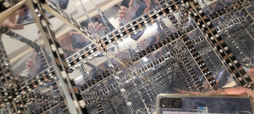

<!DOCTYPE html>
<html lang="en">
<html>

<head>
<style>
.p1 {
  font-family: "Times New Roman", Times, serif;
}

.p2 {
  font-family: Arial, Helvetica, sans-serif;
}

.p3 {
  font-family: "Lucida Console", "Courier New", monospace;
}
</style>
</head>

<body>

</body>
</html>


<title>PS70: Intro to Digital Fabrication </title>
<link href="https://cdn.jsdelivr.net/npm/bootstrap@5.1.1/dist/css/bootstrap.min.css" rel="stylesheet">
<link href="../style.css" rel="stylesheet">

<nav class="navbar navbar-expand-sm navbar-light bg-light">
  <div style="align-items: left; justify-content:left;" class="container-fluid">
    <h3 class="nav-title"> PS70: Intro to Digital Fabrication</h3>
    <div class="navbar-nav">
      <h4></h4>
      <h4><a class="nav-link" href="../index.html">Home</a></h4>
      <h4><a class="nav-link" href="../about.html">About Me</a></h4>
    </div>
  </div>
</nav>

<body>


<xmp style="display:none;">
<br> 
<p class="p3">

  <head>
<style>
body {
  background-color: #f0edfa;
}
</style>
</head>
<body>

 <b> Week 9: DIY LED Box, ala Yayoi Kusama if she was on a budget </b> <br>

This week was a group project (with Al and Anh). We pretty quickly decided to do something similar to one of the examples Nathan linked to <p><a href="https://elizabethgallardo.github.io/PHYSCI-70/Week%2010_%20Networking%20and%20Communication%20(IoT)/index.html">Ely's LED strip</a></p> in part because all 3 of us were not confident in our coding skills. <br>

The first part of the week, Al took on the task of setting up Firebase with the ESP-32 S2, Anh was working on wiring an example LED strip, and I was thinking of box structures and finding code snippets for us to work with (ended up going with a Fast.led example at the end due to...LED issues). <br>

Anh and I worked on getting the box assembled Wednesday/Thursday (Anh finished the wooden structure, I lasercut some acrylic mirror slabs I found randomly in my office (hopefully no one needs them at the CCVA, oops) and then I installed the LED strip backwards which led to about 3ish hours of failed troubleshooting by myself, then about 3 more with Anh and Ibrahim before we messaged Nathan who of course immediately solved it with A: a working power strip that can handle 120ish LED lights and B: switching the LED strip around). It's probably going to be funny 3 years from now (especially the part where I almost fried my laptop mid-troubleshooting). <br>


 <br>


<br>

</p>

</xmp>
</body>

<script src="../strapdown.js"></script>
<script src="https://cdn.jsdelivr.net/npm/bootstrap@5.0.2/dist/js/bootstrap.bundle.min.js" ></script>

</html>